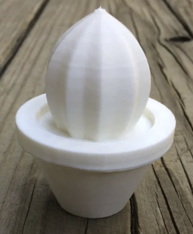
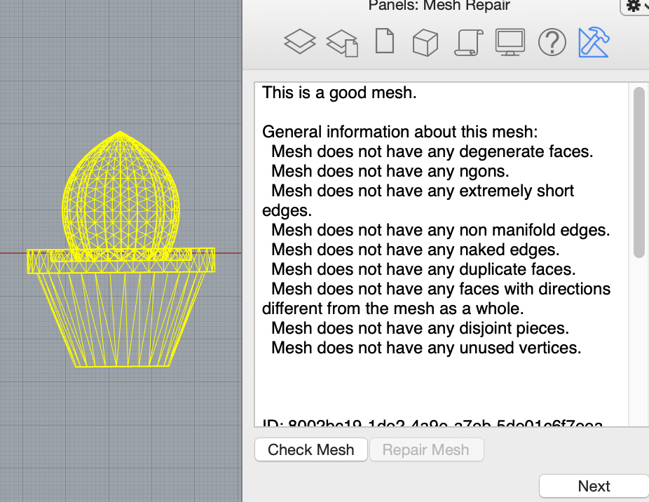
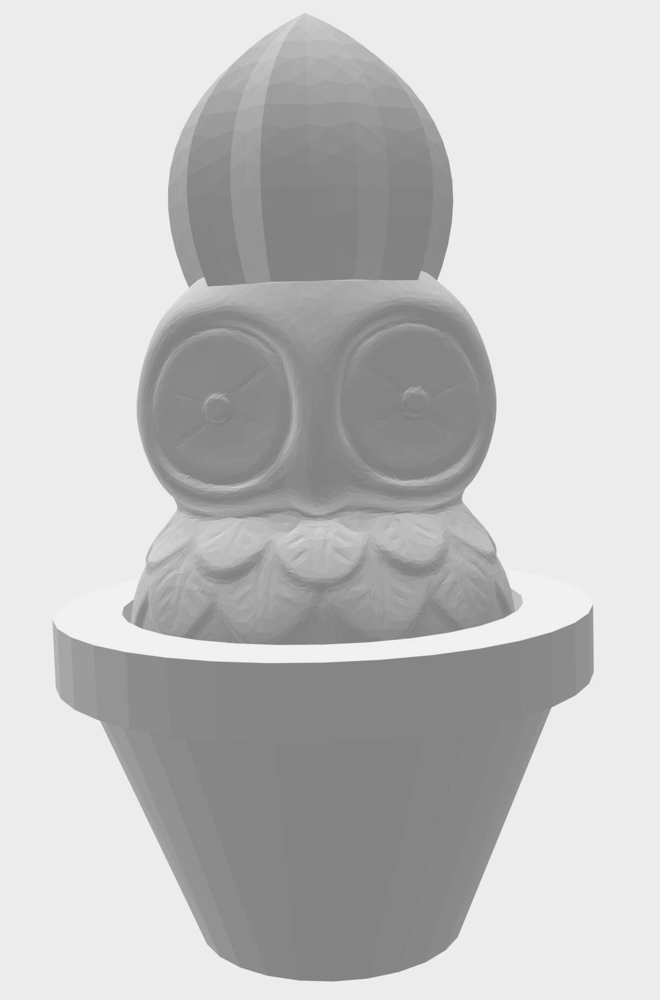
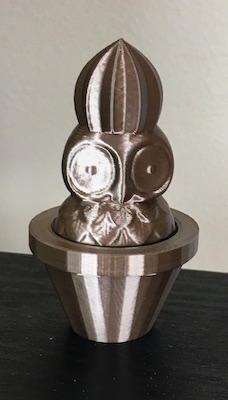

Part 1: Finishing the Lamp
This week didn't go exactly as planned. I was feeling confident that I was in a good place with my lamp at the end of last week. However, when I started printing other final pieces I realized that my project wasn't as feasible as I originally thought. As a reminder, at the end of last week I already had my base printed and the bulb stand. I only needed to print the two shades. When I started printing the outer shade I realized that because of the buld stand height, my shade was going to be too tall for the printer dimensions, so I reprinted the bulb stand to lower the position of the bulb. Then I started on the outer shade. I created the pattern in Rhino using the TweenCurves command and then used FlowAlongSrf command to attach it to the outershade. I started printing te outer shade and realized pretty quickly how delicate these shades would be. I was trying to make the shades as thin as possible to try to capture some semi-opaque light as well, but about 1/2 through a 14 hhr print, it wasn't looking good, and finally the print went awry and a large chunk was missed because the support printed incorrectly. Knowing how unstable this was, and that I would have to print a second shade, I decided to edit my design. My new design is a simpler version. Due to hheight constraints, I raised the height of the base so both the base and the shade would be more stable. I eliminated a second shade, and I made thhe remaining shade much thicker at 4mm as compared to 1.6mm. With this new plan in mind I made the sketches in Rhino and began printing. Printing the base was long, but went pretty smoothly. The shade was a different story. Once I attached the base to the bulb stand, I measured the fixture to see how tall the shade had to be. Sadly, I discovered after a completed 14 hour print that I had measured in inches and rendered in cm. So now I have a really pretty pencil holder. But, the print was not in vain. I realized the pattern was too close together and it was hard to see the size gradiaent of the pattern, so I decided to change the pattern just in the z axis. This allowed the pattern to have more negative space and to also show a bigger gradient size difference through the pattern. After an 18 hour print, I finally had the correctly sized shade and it fit on the base perfectly.


Thingiverse Owl
Thingiverse Cactus
Original cactus STL file from Thingiverse
Original owl STL file from Thingiverse
Finding the owl file was pretty easy, but I had a hard time finding a cactus file where the plant and cactus were one object. Usually the files had two objects, one for the pot and one for the cactus plant. After I found a single object cactus file, I imported both the cactus and the owl into Rhino. The objects were veryyyyyy different sizes, so I re-sized both to an appropriate in-between size.

After that, I examined the quantity of mesh faces to see if either object should be reduced. Looking at the owl, I guessed that I would need to reduce mesh faces. I was able to reduce from 300,000+ to 20,000. When I inspected the cactus I learned that the cactus only had 1,694 faces so I didn't reduce it. Next, I used the ShowEdges command because the owl looked a little unusal at first in the shaded view. Luckily, both of my objects had 0 naked edges and 0 non-manifold edges!

To be on the safe side, I also ran both objects through the MeshRepair command to validate that they were both good meshes. The MeshRepair command confirmed that both objects were good meshes. Additionally, both had zero items to repair!.




I then made a poly surface for the meshes. Because I wanted the owl to be sandwiched between the cactus object, once I added the poly surface to the cactus I copied the cactus and the surface, and then flipped the direction of the surface, so I would have one mesh object of the plant, and one object of the pot. I then used the MeshBooleanDifference command to get the size and shape of the objects to begin combining.


Using the MeshtoNURB command for all three objects I was able to successfully turn them into polysurfaces. I then aligned all three objects in the top view using concentric align. Once all three pieces were placed where I wanted, I used the BooleanUnion command. I examined the new object and it was closed. I exported it with a 0.001mm tolerance.


I then sliced the file in Cura using standard quality settings, and standard support with max resolution and max travel resolution increased to .5, and then I printed my new object.


FINAL STL
FINAL RHINO
Part 2: Building Diamonds
A few years ago, a co-worker of mine had brought in handmade soaps in a diamond shape and I thought these were really awesome. The shape and color of her soaps was my inspiration for this week. I first created my diamond shape in Rhino my using two hexagon shapes and a point as the beginning of the shape. I then concentrically aligned them, combined them with the loft command with the setting of split at tangents, then used the cap planar holes command, and this was the resulting beauty!

Next, I used the draft angle analysis. I was not surprised when I saw an even divide of red and blue, but I was thinking It might be easier to print the mold symterrically down the the vertical center to create a symmetrical mold that I could hide in on of the seams of the diamond, but then I realized I would have a seam on the top of the diamond, so I went back to the original draft angle analysis. I also thought this would be the better way to explode the shape because I could fill it from the top and I could leave a hole open so I could see when the mold was fully filled, and woulnd’t have excess in the hole. So with this plan in mind, I got to work…..


I created a surface that divided the shape and then I exploded it. I grouped the surfaces to create the two sides to the mold. Next I did a ribbon offset. Since my shape is divided on the horizontal axis, there was no need for me to make another offset with a 0 curve. I did use two offsets to create a planar surface which I connected to the ribbon offset. Then I extruded the sides of the planar surface to create the base of the mold. I learned about the shift command keyboard function to select only the top layer of the box to delete it. Finally, I used BooleanDiference to create the pour hole in the top of the top mold.


With both sides of my mold created, I added my keys. I did this by aligning the two pieces on top of each other and adding spheres for the keys. Next I copied all of the pieces, and used boolean union on one side and boolean difference on the other. Finally, I had to take both pieces of the mold and add the surrounding box to use for the silicone. I drew the boxes and used the BooleanDifference command to create the silicone mold. I then printed it.